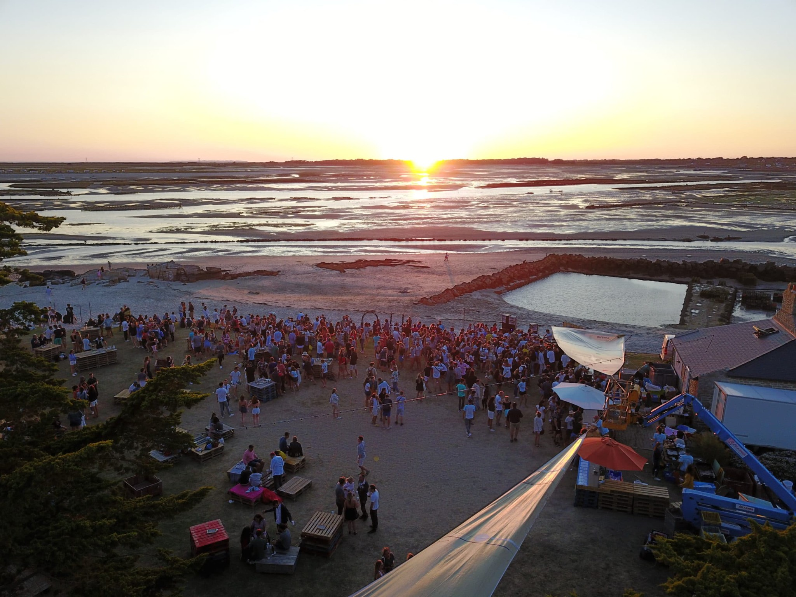
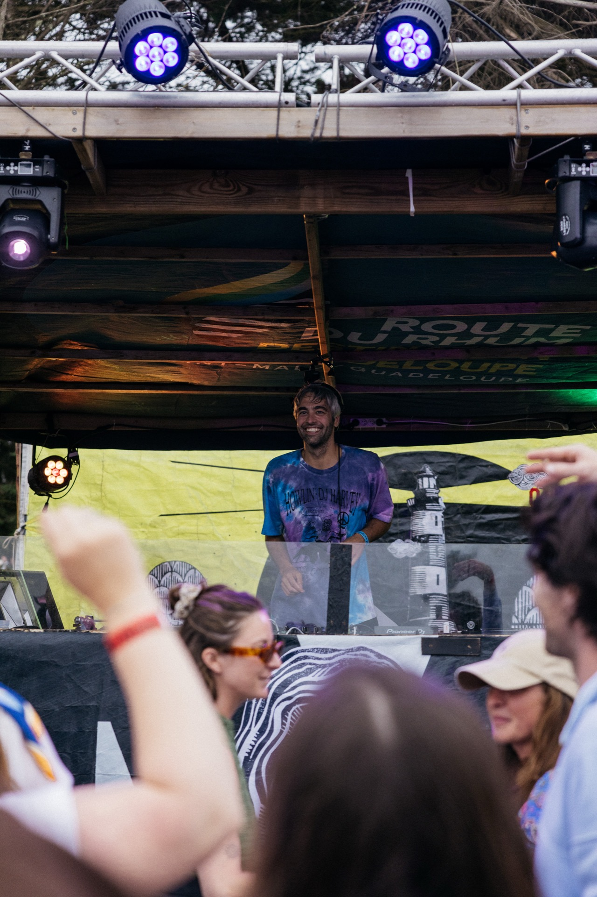
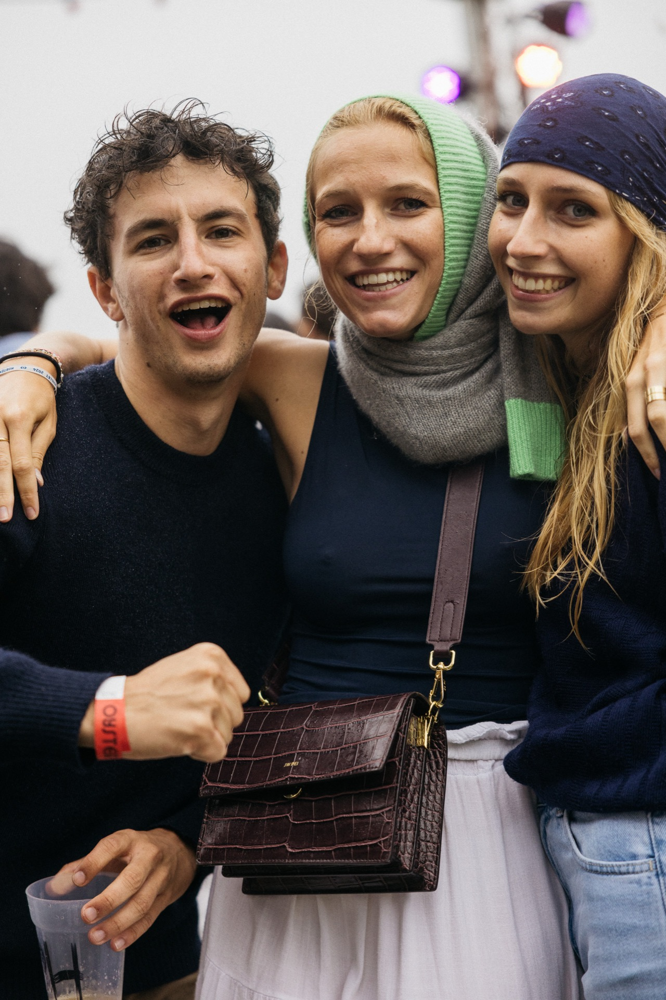

Carnac · Morbihan · Est. 2018
8ème édition — 2025

Un cycle de marée
en musique pour apprécier
ce que la Bretagne
fait de mieux.

Collectif local · Est. 2018
8ème édition 2025
Chaque année depuis 2018, nous investissons l'Anse du Pô — un spot de renommée mondiale pour les sports de glisse, niché au cœur de la Baie de Quiberon. Un lieu chargé d'histoire, de vent et d'iode, où les huîtres poussent lentement dans une eau d'exception.
La baie de Quiberon n'est pas un lieu comme les autres. Terrain de jeu des windsurfeurs et kiteurs de haut niveau, haut lieu de la régate mondiale et terroir ostréicole d'exception. Nous posons notre scène directement sur l'exploitation, les pieds dans l'estran.
Nous sommes une bande de potes qui ont grandi ici, entre les bateaux, les casiers à homards et les planches à voile. Pas de décor en carton-pâte. Tout ce qui compose le festival vient du territoire, de la mer ou des mains de ceux qui y vivent.
Des huîtres tirées du parc le matin même. Des homards. Des produits de la mer de grande qualité, cuisinés par des chefs qui connaissent et respectent la matière. Ici, l'assiette est aussi une déclaration d'intention.
Chaque édition, nous confions la scénographie à des artistes et artisans locaux — cordages, bois de bateau, filets, balisage, caisseries ostréicoles. Ce qui aurait fini en déchets devient décor, lumière, installation.







Pas par hasard qu'on s'appelle Oyster House. L'huître, c'est le symbole de ce territoire, de ceux qui y vivent, de ceux qui y travaillent. Et franchement, elle le mérite.
Ce petit coquillage filtre jusqu'à 200 litres d'eau par jour. Elle absorbe l'azote, piège les microplastiques, régule les écosystèmes côtiers. Discrète, efficace, essentielle — un peu comme les ostréiculteurs qui en prennent soin.
La mer, on y passe la majeure partie de notre temps. On la surfe, on la navigue, on s'y baigne. Elle nous fait vibrer, elle nous ressource, elle nous définit. Elle nourrit l'âme autant que l'esprit. Elle nous a inspirés — et c'est ce qu'on a envie de vous transmettre.
Alors on fait attention à elle. Pas parce qu'on nous l'a demandé. Parce qu'on l'aime.
Sauf que ni l'huître ni les ostréiculteurs ne font beaucoup de bruit. Acidification des eaux, pression démographique, agents pathogènes — des défis réels, souvent invisibles depuis la côte.
Oyster House, c'est leur donner une scène.
Les coquillages filtrent l'eau, régulent nos littoraux et maintiennent l'équilibre naturel des côtes bretonnes.
320 entreprises, 4 000 emplois, 50 M€ de chiffre d'affaires — un tissu vivant, ancré dans le territoire depuis des générations.
Depuis les mégalithes de Carnac, les coquillages font partie du paysage. On est là pour que ça continue.
De la marée basse au coucher de soleil, l'Oyster House c'est 12 heures où tout le monde trouve son rythme. Concerts, sport, mer, table — un festival où chaque heure a sa saveur.


Depuis 2018, chaque été à l'Anse du Pô. Huit chapitres d'un même spot.
Musique live, artistes locaux, scénographie éphémère. Gastronomie maritime — huîtres, homards, produits locaux. Artisans, pêcheurs, conchyliculteurs. Wing et windsurf welcome.
Voir le programmeChaque été à l'Anse du Pô, Carnac. Huîtres, musique et marées — rejoignez le mouvement.